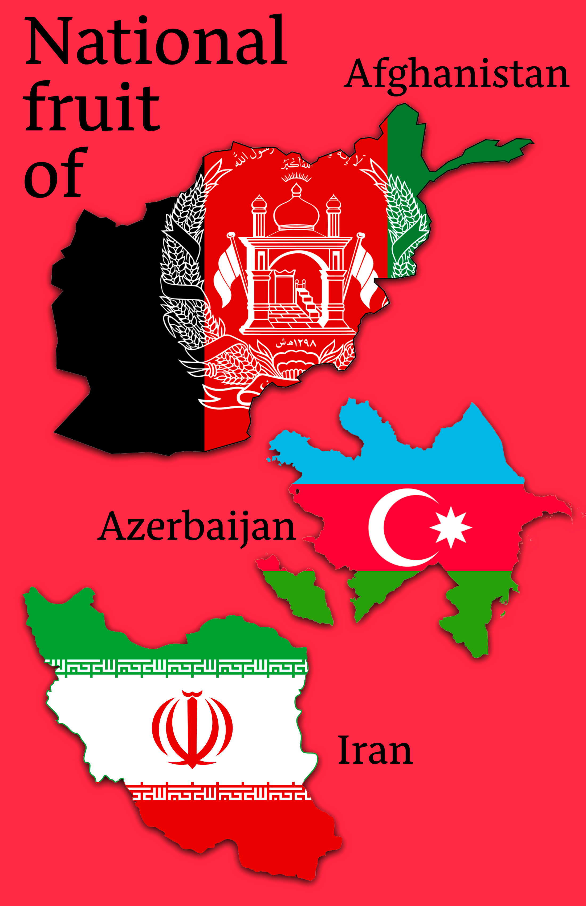
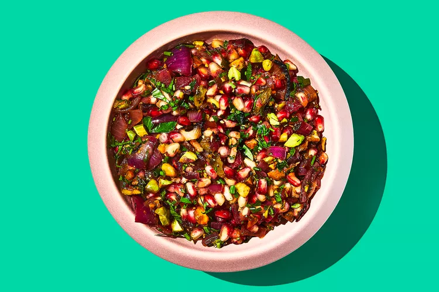
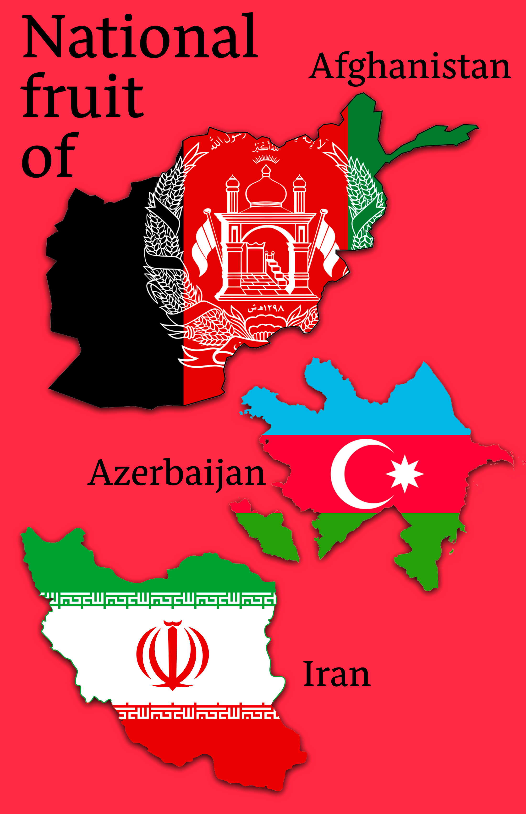
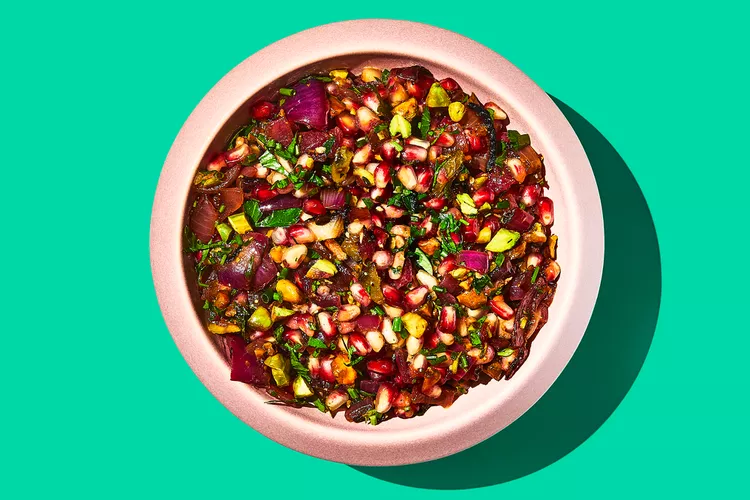

The
Pomegranate
Pomegranate is a fruit that is native to the Middle East, but is now cultivated
in many
regions around the world. It has a round shape and a thick, leathery skin
that ranges
in colour from pinkish-red to deep red. Pomegranates have a juicy,
translucent pulp
that is packed with small, edible seeds called arils. The arils
have a sweet and tart
flavor, and can be eaten raw or used in a variety of dishes,
such as salads, desserts,
and sauces. Pomegranates are high in antioxidants, fiber,
vitamin C, and vitamin K,
and are also a good source of other essential nutrients.
Some popular uses of
pomegranate include juice, molasses, and tea. Pomegranates are
also used in
traditional medicine for their potential health benefits, such as
reducing inflammation
and improving heart health.
Pomegranate Salsa
Recipe
(click image)
 


